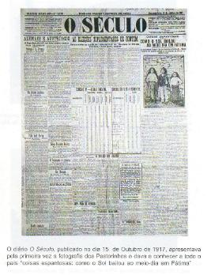
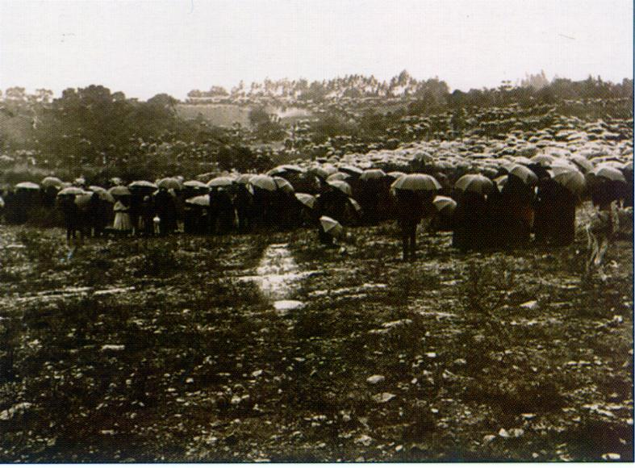
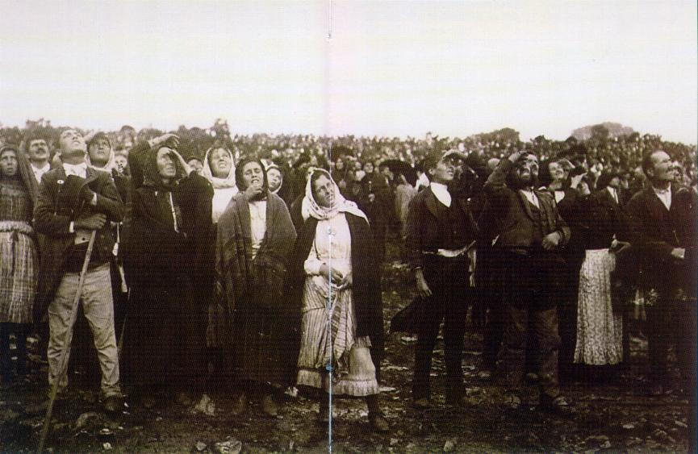
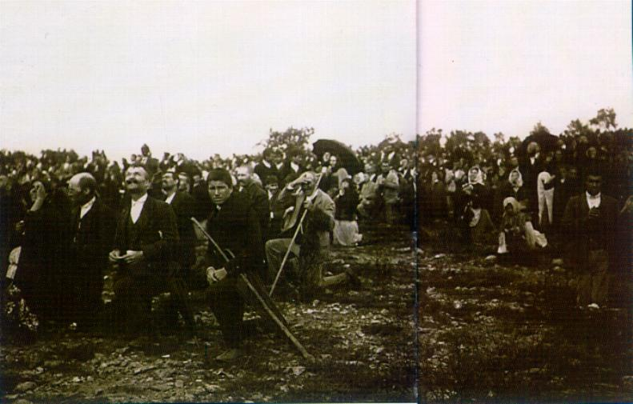
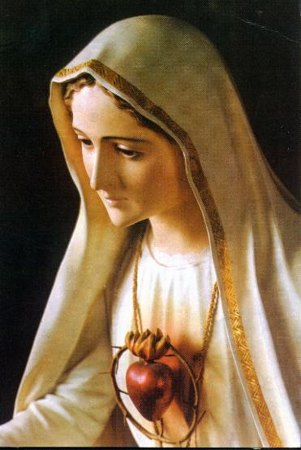

De um modo geral, os livros e a mídia mencionam "O Milagre do Sol" muito superficialmente, às vezes de modo incompleto e bastante resumido, sem destacar o colorido e o esplendor do acontecimento, e com esse procedimento, proporcionam uma idéia extremamente modesta que não realça o valor da ação de DEUS. Todavia, na realidade foi uma ocorrência única, deslumbrante e admirável, que impressionou a todas as pessoas. Por essa razão, decidimos buscar na origem as informações do fato, a fim de apresentar integralmente uma correta e minuciosa descrição do fenômeno utilizado pelo CRIADOR para atestar de maneira veemente e definitiva, a vinda de NOSSA SENHORA à Fátima e também, com a finalidade de autenticar e colocar em realce, o conteúdo da Missão da Divina Mãe.

Já haviam decorrido as duas primeiras aparições de NOSSA SENHORA em Fátima, quando Lúcia, no dia 13 de Julho de 1917 dirigiu à SANTÍSSIMA VIRGEM MARIA este pedido:
- “Queria pedir-LHE para nos dizer quem é, para fazer um milagre com que todos acreditem que Vossemecê nos aparece.”
NOSSA SENHORA respondeu:
- “Continuem a vir aqui todos os meses. Em Outubro direi quem sou o que quero e farei um Milagre que todos hão de ver, para acreditar.”
O Milagre é Obra Divina e somente ele, é que coloca o sinete de DEUS nos acontecimentos, para provar a sua veracidade.
Dessa forma, a Missão de NOSSA SENHORA foi plenamente confirmada com a realização do Milagre do Sol, no dia 13 de Outubro de 1917. Ele foi anunciado com 92 dias de antecedência, a fim de que uma maioria de pessoas soubessem da profecia e se interessassem em conferir a realidade.

No dia e à hora anunciada, aconteceu o fenômeno nunca visto antes, presenciado e testemunhado por milhares de pessoas estarrecidas e maravilhadas com sua grandeza e inconfundível beleza.
Também foi testemunha o jornalista Avelino de Almeida, que fora enviado pelo diário “O Século”, para relatar as ocorrências daquele dia, na Cova da Iria. Assim, com os seus próprios olhos viu “as coisas espantosas” e nesse jornal diário, no dia 15 de Outubro, sob o título: “Como o Sol bailou ao meio dia em Fátima” descreveu todos os fatos deslumbrantes e memoráveis que teve a felicidade de presenciar.
Naquele dia começou a chover as 11 horas e na hora marcada chovia torrencialmente! Mas a multidão de 70.000 pessoas esperou pacientemente durante 4 horas a chegada dos Pastorzinhos. O terrível temporal molhou as roupas, o corpo e até os ossos de todos que estavam lá, deixando poças por todos os lados com uma espessura de até 10 centímetros de água, além de estar soprando um vento úmido, incômodo e muito frio. O Milagre fora marcado para as 12 horas. E exatamente à essa hora, as nuvens escuras carregadas de água de repente desmancharam-se no firmamento.

Apareceu em Fátima um maravilhoso arco-íris ao meio dia, muito embora pela posição do sol, os arco-íris somente acontecem pela manhã ou a tarde. Contudo ali estava um arco-íris especial e suas cores brilhavam com uma intensidade cem vezes superior a cor dos arco-íris normais, formando ao invés de um arco abobadado como habitualmente, formou uma grande faixa perpendicular com 12 metros de altura que cobriu homens, muros e árvores. A multidão pareceu ver por cima o céu azul, mas era apenas uma ilusão de ótica. Porque na realidade, as pessoas olhavam não para o sol planetário, atrelado a sua órbita, mas para um disco na mesma dimensão do sol, que parecia dourado a uns observadores, prateado a outros, ou ainda na cor de salmão, ou também, como se fosse um disco multicolorido que mudava a sua cor. Entretanto, o que espantava não era o disco, mas sim a faixa circular de luz ao redor dele, que crescia rapidamente de luminosidade e derramava o seu admirável brilho sobre a multidão, sem cegar os olhos, envolvendo todos os presentes numa luz difusa, como se fosse uma meia sombra sem, contudo, projetar uma imagem de sombra em qualquer direção!
O disco começou a girar neste mar de luz celestial, imprimindo cada vez mais velocidade, aumentando o seu movimento de rotação, projetando feixes de luzes coloridas em todas as direções, que encantava a todos os observadores. Acontecimento lindo que fascinava e fazia lembrar as "rodinhas" (fogos de artifício), mas muito mais intenso e mais fantástico! E assim permaneceu durante 2 minutos. Depois parou. Fez uma pausa cerca de 1 minuto e logo recomeçou num segundo ato, mais vibrante e de uma maneira diferente da anterior. Sob o intenso campo luminoso do céu, o disco passou a se movimentar mudando continuamente de posição e também mudando de cor: dourado, prateado, azul, vermelho, amarelo canário, verde, etc., proporcionando a impressão mais bonita e surpreendente. Agora o disco começou a dar pulos, eram saltos triangulares com tão grande agilidade que imitava um ritmo, ou talvez uma dança popular. A seguir, depois de mostrar uma agitação oscilatória fez uma nova pausa. Assim permaneceu por mais 1 minuto e logo, recomeçou de modo impressionante o terceiro ato. O disco como um foguete, num aumento crescente de velocidade, se projetou em direção a terra sobre a multidão, como se fosse massacrar o povo, e de repente, evitando a colisão, parou próximo ao solo, que de tão perto dir-se-ia poder alcança-lo com as mãos, e retornou velozmente. Agora, mudando a sua trajetória, fazendo aquele movimento de zigzag em direção ao verdadeiro sol planetário, que por fim o absorveu, ou seja, ficaram superpostos, aparecendo só o disco solar que rompeu as nuvens mais altas com a força de seu brilho e iluminou toda a multidão. As muitas nuvens que existiam dispostas no espaço a milhares de metros de distância uma das outras, foram movidas com precisão sensacional e de tal maneira sobrepostas, que o sol verdadeiro perdeu o brilho e nenhuma das 70.000 pessoas que presenciavam o fenômeno, sofreu danos na retina ocular. Neste momento veio uma onda de calor e de repente, todas as roupas molhadas secaram-se numa fração de tempo e a água das poças e dos charcos evaporou-se. Em menos de 2 minutos a água pantanosa e a lama fria transformaram-se em suave beleza campestre! Essa onda de calor foi sentida agradavelmente por algumas pessoas e por outras nem sequer foi notada. Quando terminou aquela notável apresentação tudo estava completamente seco.

Muitos estavam profundamente comovidos.
Rezavam em voz alta, pediam a DEUS o perdão de seus pecados. Contudo
é importante ressaltar, que a extraordinária dança do disco solar não constituiu
uma ameaça e nem trouxe terror em nenhum momento, mas trouxe sim, um estimulo
vigoroso que convidava todas as pessoas a viverem com alegria e a cultivarem
a fé com atenção, devoção e um fervoroso ardor.
O Milagre teve a duração de 12 minutos.

Na realidade, naquele dia estava acontecendo dois Milagres, ou melhor, um Milagre dentro do outro. Depois que NOSSA SENHORA se despediu, enquanto a multidão apreciava os fenômenos extraordinários com as manifestações mais impressionantes e surpreendentes do disco solar, e também se admiravam com a atuação da chuva, do vento e daquele maravilhoso festival de cores, os três Pastorzinhos receberam visitas inesquecíveis. Vamos acompanhar as palavras da Irmã Lúcia. Ela descreve em sua Quarta Memória as ocorrências do dia 13 de Outubro de 1917.
"Saímos
de casa bastante cedo, contando com as demoras do caminho
(as pessoas que se aproximavam, faziam pedidos, queriam orações ou narravam
alguma ocorrência). O povo era em massa.
A chuva, torrencial. Minha mãe, temendo que fosse aquele o último dia da minha vida,
com o coração retalhado pela incerteza do que iria acontecer, quis acompanhar-me.
Pelo caminho, as mesmas cenas do mês passado, mais numerosas e comovedoras.
Nem a lamaceira dos caminhos impedia essa gente de se ajoelhar na atitude mais
humilde e suplicante. Chegados à Cova da Iria, junto da carrasqueira, levada por
um movimento interior, pedi ao povo que fechasse os guarda-chuvas para
rezarmos o 
- “Que é que Vossemecê quer?” foi a pergunta de Lúcia.
-"Quero dizer-te que façam aqui uma Capela em Minha honra, que Sou a SENHORA DO ROSÁRIO, que continuem sempre a rezar o Terço todos os dias. A guerra (1ª Guerra Mundial) vai acabar e os militares voltarão em breve para suas casas."
- "Eu tinha muitas coisas para LHE pedir: se curava uns doentes e se convertia uns pecadores, etc."
- "Uns, sim; outros não. É preciso que se emendem, que peçam perdão dos seus pecados."
E tomando um aspecto com as feições mais triste, ELA disse:
- “Não ofendam mais a DEUS NOSSO SENHOR que já está muito ofendido!”
Descreveu a Irmã Lúcia: "E abrindo as mãos, projetou feixes de luz que refletiram no Sol. E enquanto se elevava da azinheira para o Céu, continuava o reflexo da Sua própria luz a projetar-se no Sol.”
Lúcia emocionada gritou: "Olhem, olhem para o Sol". Depois ela explicou: "O meu fim não era chamar para si a atenção do povo, pois que nem sequer me dava conta da sua própria presença. Fi-lo apenas levada por um movimento interior que a isso me impeliu."
Naquele exato momento "as nuvens desapareceram num instante, a chuva terminou e apareceu o sol que tinha uma cor prateada e não cegava". E então, começaram as duas manifestações sobrenaturais distintas: a dos Pastorzinhos e aquela da multidão que foi apresentada acima.
Lucia continua a descrever:
-"Desaparecida NOSSA SENHORA na imensa distância do firmamento, vimos, ao lado do Sol, São José com o Menino JESUS e NOSSA SENHORA vestida de branco, com um manto azul. São José com o Menino JESUS pareciam abençoar o Mundo com uns gestos que faziam com a mão em forma de cruz. Pouco depois, desvanecida esta aparição, vi NOSSO SENHOR e NOSSA SENHORA que me dava a idéia de ser NOSSA SENHORA DAS DORES. NOSSO SENHOR parecia abençoar o Mundo da mesma forma que São José. Desvaneceu-se esta aparição e pareceu-me ver ainda NOSSA SENHORA em forma semelhante a NOSSA SENHORA DO CARMO."

Esta extraordinária manifestação sobrenatural, representa mais um supremo esforço do Amor de DEUS, objetivando acordar a humanidade do torpor do pecado, atraindo todos os seus filhos à conhecerem a Verdade Cristã e a se dedicarem com entusiasmo e devoção, ao estabelecimento de uma sincera e permanente amizade com o SENHOR, procurando cultivar em plenitude, o direito, a justiça e o amor fraterno. A grandeza do acontecimento, testemunha a dimensão infinita do poder Divino e coloca na mente e no coração da humanidade, a imensidão da felicidade que a amizade e o amor de DEUS proporcionam a todos os seus filhos, que buscam a sua tão querida e eficaz proteção.